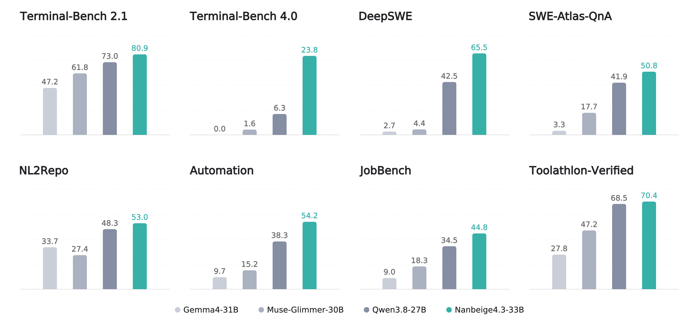
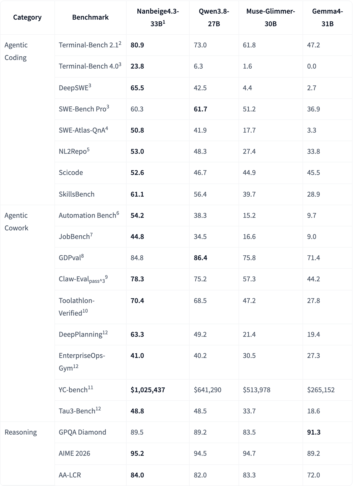
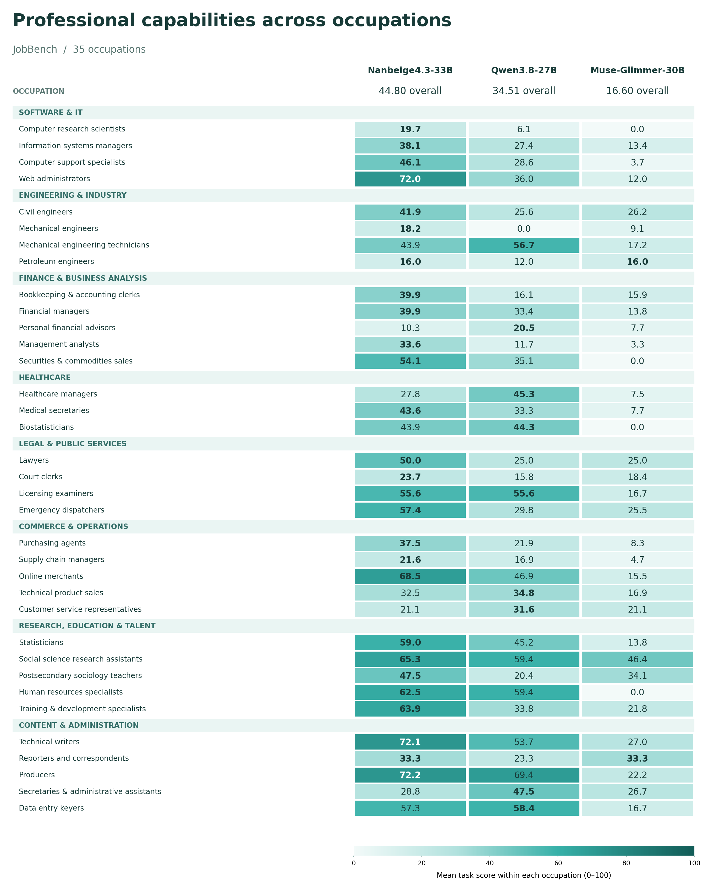
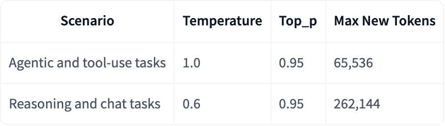

1. 引言
在 Nanbeige4.3 中，我们朝着拓展轻量级 agent 的边界迈出了基础性的一步。我们的策略以首先构建一个高容量教师 agent 为核心，随后以它为基础，将先进的 agent 能力蒸馏到更小的模型中。
为此，我们首先推出 Nanbeige4.3-33B，将其设计为 Nanbeige4.3 系列的旗舰教师模型。在约 30B 参数级别的开放模型中，Nanbeige4.3-33B 取得了最先进的 agent 性能，擅长复杂编码和专业协同办公任务。它既为立即开展现实部署提供了强大、高性价比的选择，也为我们即将开展的小模型蒸馏流程（例如 Nanbeige4.3-3B）奠定了必要基础。

2. 模型性能
我们将 Nanbeige4.3-33B 与近期发布的约 30B 参数规模的前沿模型比较：Qwen3.8-27B、Muse-Glimmer-30B 和 Gemma4-31B。所有模型均在最高思考强度下评估。对于每个基准，各模型均使用相同的推理超参数和评测框架。

1 评估 Nanbeige4.3-33B 时，在聊天模板中设置 preserve_thinking=true。
2 Terminal-Bench 2.1 使用 Terminus 2 评估。
3 Terminal-Bench 4 和 DeepSWE 使用 mini-swe-agent v2.4.6 评估。
4 SWE-Atlas-QnA 使用 mini-swe-agent v2.4.6 评估。答案依据 1,304 条任务专用评分细则进行评估，由采用中等推理强度的 GPT-6 Sol 担任评判模型。
5 NL2Repo 使用 Claude Code 评估。
6 Automation Bench v1.0.6 包含 600 个公开发布的任务。
7 JobBench 使用配备搜索工具的 Claude Code 评测框架评估。
8 GDPval 使用修订后的评分细则评分。
9 Claw-Eval 仅在 Claw-Eval General 子集上评估，该子集包含 157 个单轮用户交互任务。
10 Toolathlon-Verified 不为单次模型请求设置 max_tokens 限制。
11 每次模型调用前，YC-bench 仅保留最近 10 轮用户对话作为历史上下文。
12 DeepPlanning、EnterpriseOps-Gym、Tau3-Bench 使用各自的官方仓库评估。
Nanbeige4.3-33B 在大多数基准上领先，在 agent 编码和协同办公任务中均展现出强劲性能。
除了覆盖广泛的基准，Nanbeige4.3-33B 在涵盖众多职业和行业的 agent 任务上也表现出色。例如，在 JobBench 评估的 35 种职业中，它在大多数职业上超越基线。

3. 快速开始
tokenizer 为推理和工具使用场景提供可配置的聊天模板：
enable_thinking控制模型是否为当前回答生成推理。它默认启用；设置为False可使用非思考模式。preserve_thinking控制多轮对话中是否保留助手先前轮次的推理。对于通用聊天和问答，我们推荐False；对于多轮工具使用、办公任务和代码 agent 工作流，推荐True。- 传入
tools可启用工具使用模板。为获得最佳工具调用性能，我们推荐tool_call_format="xml"；为兼容性也支持json。
模型支持最长 524,288 token（512K）的上下文。
我们建议根据目标场景调整推理设置：

你可以使用 Transformers、SGLang 或 vLLM 运行模型：
Transformers
from transformers import AutoModelForCausalLM, AutoTokenizer
model_id = 'Nanbeige/Nanbeige4.3-33B'
tokenizer = AutoTokenizer.from_pretrained(
model_id,
use_fast=False,
trust_remote_code=True
)
model = AutoModelForCausalLM.from_pretrained(
model_id,
torch_dtype='auto',
device_map='auto',
trust_remote_code=True
)
messages = [{'role': 'user', 'content': 'Which number is bigger, 9.11 or 9.8?'}]
inputs = tokenizer.apply_chat_template(
messages,
add_generation_prompt=True,
return_tensors='pt'
).to(model.device)
output_ids = model.generate(inputs, max_new_tokens=1024)
response = tokenizer.decode(output_ids[0][inputs.shape[-1]:], skip_special_tokens=True)
print(response)
SGLang
MODEL_PATH=/path/to/your/Nanbeige4.3-33B
python -m sglang.launch_server \
--model-path ${MODEL_PATH} \
--host 0.0.0.0 \
--port 8000 \
--tp-size 4 \
--mem-fraction-static 0.8 \
--reasoning-parser qwen3 \
--tool-call-parser qwen3_coder
vLLM
MODEL_PATH=/path/to/your/Nanbeige4.3-33B
vllm serve ${MODEL_PATH} \
--host 0.0.0.0 \
--port 8000 \
--tensor-parallel-size 4 \
--gpu-memory-utilization 0.8 \
--enable-auto-tool-choice \
--reasoning-parser qwen3 \
--tool-call-parser qwen3_coder
4. 联系方式
如有任何问题，请在本仓库提出 issue，或通过 nanbeige@kanzhun.com 联系我们。
我们也欢迎合作构建面向特定领域和行业的 agent，包括在数据与训练方面开展联合工作。
5. 引用
如果你认为我们的模型有用，或者希望在自己的工作中使用它，请引用本 Hugging Face 项目：
@misc{nanbeige43chat2026,
title = {Nanbeige4.3-33B},
author = {Nanbeige Team},
year = {2026},
publisher = {Hugging Face},
howpublished = {\url{https://huggingface.co/Nanbeige/Nanbeige4.3-33B}}
}